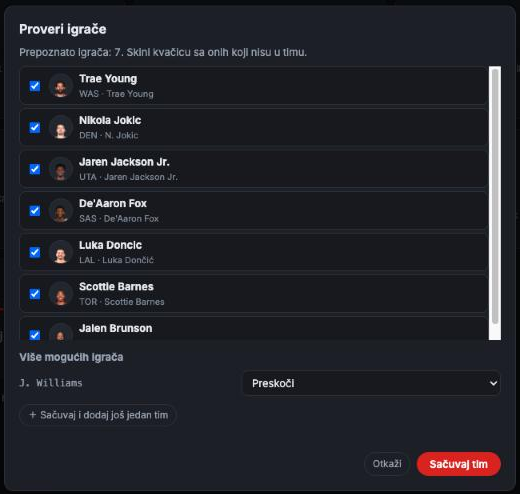

Kako da uvezeš svoju fantasy basketball ligu
RosterSwing čita samo javne lige. Nikad ne tražimo lozinku, prijavu ni kolačiće. Izaberi svoju platformu ispod.
ESPN
ESPN lige su podrazumevano privatne. Samo League Manager (LM) može da označi ligu kao javnu, i to samo na ESPN sajtu, ne u aplikaciji.
- Otvori svoju ligu na fantasy.espn.com u browseru.
- Idi na League > Settings > Basic.
- Nađi Make league viewable to public, podesi na Yes i sačuvaj.
- U RosterSwingu klikni Dodaj ligu > ESPN javna liga i nalepi ID lige ili link ka ligi.
Javnu ligu svako može da vidi, ali ne i da uđe u nju. Zbog ovog podešavanja niko ne može da se priključi ligi ni da bilo šta promeni, a LM može da ga vrati kad god hoće.
Gde da nađem ID lige
Otvori ligu na ESPN sajtu i pogledaj adresu u browseru. Broj posle leagueId= je ID lige, na primer leagueId=123456. Možeš da nalepiš i ceo link, RosterSwing sam nalazi ID.
Nisi LM?
Pošalji ovu poruku League Manageru:
Ćao, možeš li da podesiš našu ESPN ligu da bude 'viewable to public'? Nalazi se pod League > Settings > Basic na sajtu. To nikome ne dozvoljava da uđe u ligu, samo omogućava alatima kao što je RosterSwing da čitaju rostere, pa mogu da analiziram trejdove.
Yahoo
Automatski uvoz sa Yahoo stiže uskoro. Do tada koristi Nalepi roster: treba oko minut po timu.
Za Yahoo uvoz liga će morati da bude javno vidljiva. Komesar to uključuje opcijom Make League Publicly Viewable u podešavanjima lige. To nije isto što i Publish League, to je drugo podešavanje.
Fantrax
U RosterSwingu izaberi Fantrax javna liga (oznaka Beta) i unesi ID ili link lige. Uvozimo timove, rostere i tabelu, a format bodovanja biraš sam. Da bi liga bila javna, komesar ide na Commissioner > League Setup > Misc i uključuje Allow public to view league.
ID lige je deo adrese lige posle /league/, na primer fantrax.com/fantasy/league/abc123xyz/home.
Sleeper
U RosterSwingu izaberi Sleeper liga (oznaka Beta). Uvozimo timove, rostere, tabelu i bodovanje na poene. Za Sleeper ligu ne treba menjati podešavanja. ID lige je dugačak broj u adresi lige, na primer sleeper.com/leagues/1180226123456789012, a možeš da uneseš i svoje Sleeper korisničko ime.
Nalepi roster (CBS, Yahoo i druge platforme)
Radi sa svakom platformom koja ima stranicu rostera. Nalepljuješ jedan po jedan tim.
- Na svojoj platformi (Yahoo, CBS, Fantrax ili bilo kojoj drugoj) otvori stranicu rostera jednog tima.
- Označi celu stranicu sa Ctrl+A (na Macu Cmd+A) i kopiraj sa Ctrl+C (Cmd+C).
- U RosterSwingu klikni Dodaj ligu > Nalepi roster, nalepi tekst i klikni Prepoznaj igrače.
- Proveri igrače. Gde ime odgovara za više igrača, izaberi pravog, a imena koja nismo pročitali upiši sam.
- Klikni Sačuvaj i dodaj još jedan tim za sledeći tim.

Statistike, pozicije i statusi povreda u nalepljenom tekstu se ignorišu, koriste se samo imena igrača. Nalepljene lige ostaju izmenjive, a svaki tim možeš ponovo da nalepiš kad mu se roster promeni.
Česta pitanja
Da li su moji podaci bezbedni?
Jesu. RosterSwing nikad ne traži lozinku, prijavu ni kolačiće. Čitamo samo ono što javna liga pokazuje svima, a lige se čuvaju u tvom browseru. Ne čuvamo prava imena članova lige.
Zašto samo javne lige?
Za čitanje privatne lige trebali bi nam kolačići tvoje prijave. Ne želimo da ih tražimo ni da ih čuvamo, pa za sada uvozimo samo javne lige.
Da li će privatne lige biti podržane?
Privatne lige stižu. Do tada LM može da označi ligu kao javnu, ili možeš da koristiš Nalepi roster.
Da li nepoznati ljudi mogu da uđu u ligu ako je javna?
Ne. Javna znači da se vidi, ne da se u nju ulazi. Niko ne može da se priključi ni da bilo šta promeni, a LM može da vrati podešavanje kad god hoće.